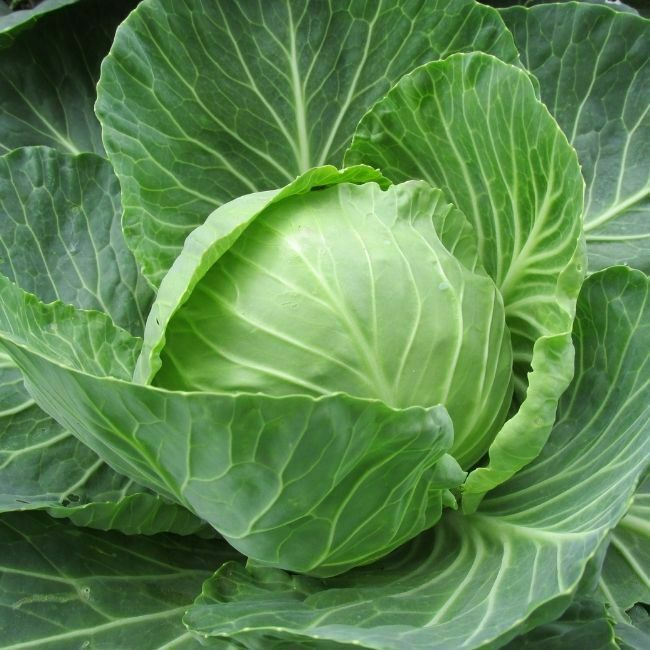

African food is organic plant-based with little meat, and fish often added for flavour.
Traditional African dishes typically have fish, meat, starchy foods, and a wide variety of herbs and spices.
Many African cuisines use a combination of locally available cereal grains, fruits, vegetables, meat, and milk products.
Popular African foods include palm oil, rice, cassava, yams, groundnuts, beans, coffee, and coconut.
African foods are unrefined natural foods, including whole grains, legumes, roots and tubers,
and a variety of fruits, seeds, nuts, and vegetables
here are some fresh okro
check here for some fresh vegetables
This is the tast of Africa Goodness
fresh cabbage
